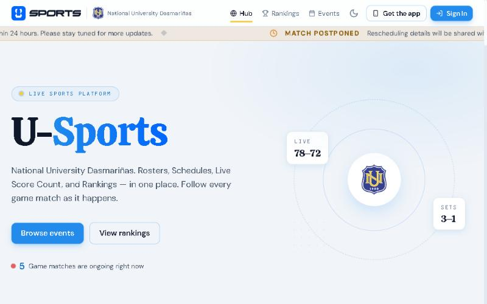
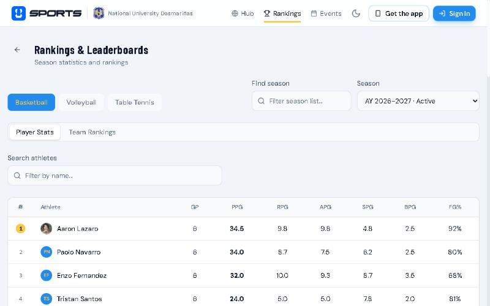
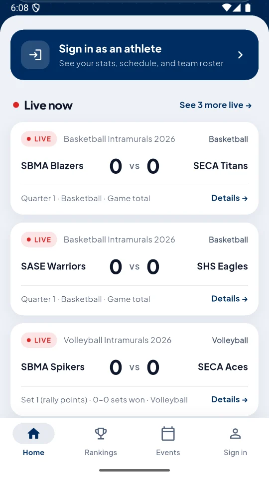
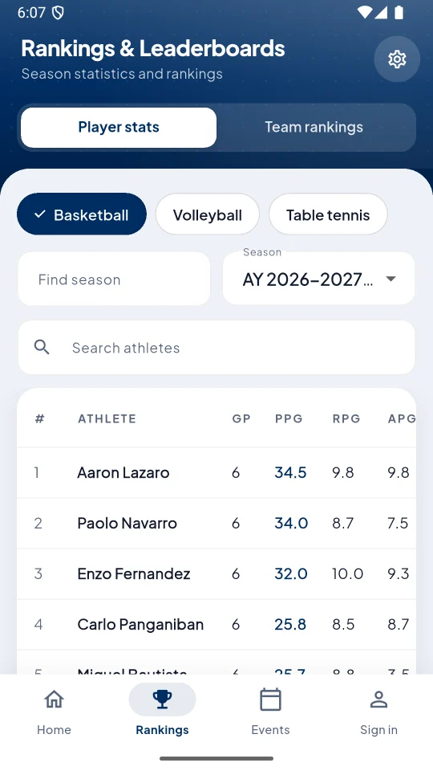

A real-time intramural sports platform for NU Dasmariñas, on the web and as an Android app. Covers rosters, schedules, live scoring, brackets, rankings and insights.




- Live scoring with Supabase Realtime, undo, and a lock so two scorekeepers cannot collide. Includes a full-screen jumbotron view for projection.
- Single elimination, double elimination and round-robin brackets, with seeding and byes.
- Role-based access for guests, athletes, coaches, organizers and super admins. The API enforces it, and the database rejects direct writes that bypass it.
- Exports to CSV, Excel and PDF, and a privacy flow covering data download and account deletion (Data Privacy Act, RA 10173).